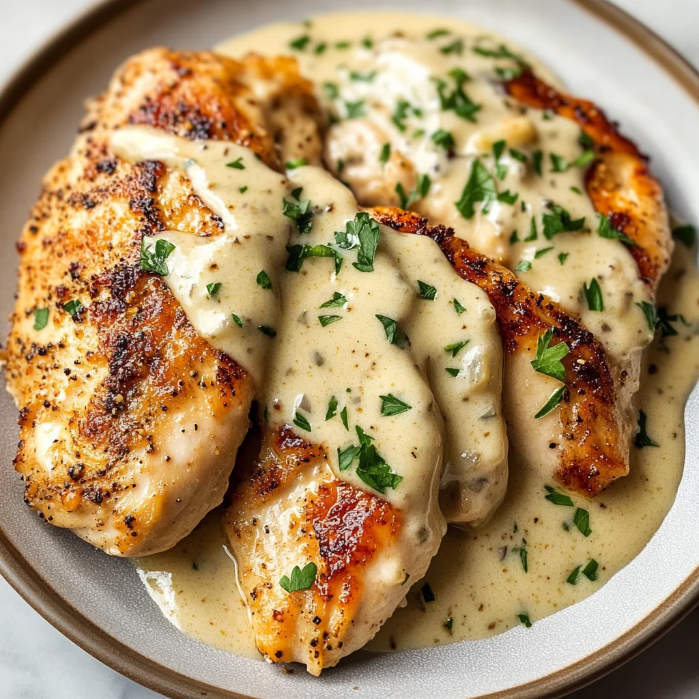

Creamy Garlic Parmesan Chicken

You loved chicken fingers as a child? Well this mature take on the classis chicken fingers will give you the same nostalic feelings. The chicken is mixed with the cream in the same pot. Where the chicken was cooked. Its the perfect nostaligic/comfort food mix.
Ingredients
]
- 2 pounds chicken breast tenders
- salt and freshly ground black pepper to taste
- 1/2 cup all-purpose flour
- 2 large eggs, beaten
- 1 1/2 cup freshly grated Parmesan cheese
- 1 cup italian-seasoned panko bread crumbs
- 1 teaspoon smoked paprika
- parchment paper
- 4 tablespoons unsalted butter, divided,
or more as needed
- 2 tablespoon olive oil, or more as needed
- 3 cloves garlic, minced
- 1/2 cup dry white wine
- 1 teaspoon dried italian seasoning
- 1/2 teaspoon red pepper flakes, or to taste
- 2 cups heavy cream
- chopped fresh parsley for garnish (optional)
Directions
- Pat chicken tenders dry with paper towels and season lightly with salt and pepper
- place flour on a shallow plate. Place beaten eggs into a shallow bowl. Combine grated parseman cheese, italian-seasoned panko crumbs, and 1 teaspoon smoked paprika, and place on a second shallow plate.
- Cover a dinner plate or platter with parchment paper.
- Dip each lightly seasoned chicken breast tender in flour, shaking off the excess. Next,dip in beaten egg, and hold the tender over the eggs to allow excess to drip back into the bowl. Place each tendeer on the panko mixture. With dry fingers, scoop panko mix over the tender, patting the crumbs in. Place on the parchment-covered plate.
- Repeat with remaining chicken tenders, until all tenders are breadeed with flour, egg, and panko mix.
- Melt 2 tablespoons butter and 3 tablespoons olive oild in a large skillet over medium heat until butter is bubbling. Add tenders,1 at a time, being careful not to crowd the skillet. You may need to cook chicken in 2 batches. Cook until breading is browned and chicken is no longer pink in the center and the juicess run clear, 3 to 4 minutes per side, being carefuk not to burn the breading.
- Turn tenders when the crust is nicely browned and continue cooking until an instant-read thermometer inserted into the center should read at least 165 degrees F(74 degrees C). Adjust heat down a notch or two, if the crust is getting too brown, and add a bit more oil or butter, if the skillet looks dry. Remove cooked chicken to a cooling rack.
- Add garlic to the skillet, and stir until the garlic is fragrant, 30 to 45 seconds. Deglaze skilet with white wine, stirring up all the browned bits from the bottom of the skillet. Season italian herb seasoning blend and red pepper flakes.
- Stir in cream and heat over medium high. Bringe sauce to a boil, stirring frequently, and adjust flavour with salt and pepper, if needed. Allow sauce to bubble until desired consistency is achieved, to 3 to 4 minutes.
- Return cooked chicken tenders to the skillet and warm in the sauce, about 1 minute. Garnish with fresh parsley.
A note
This creamy dish is perfect with plain pasta, mashed potatoes, or green vegetables
Home